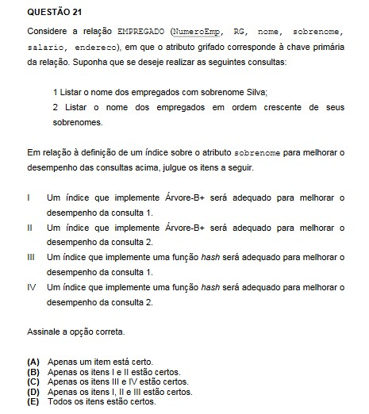
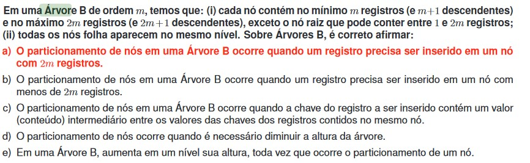

Nada como treinar seu conhecimento, não?
Que tal dar uma olhadinha na nossa seção de exemplos e atividades e se aprofundar nos assuntos?
Esta é uma sessão de apoio ao conteúdo em continua construção!
Selecionamos para você uma lista de exemplos interessantes para você treinar seus conhecimentos.
Confira!
Será que você sabe a resposta para a pergunta abaixo? Ela foi retirada do ENADE de 2008 e a resposta você confere no final da página!

No POSCOMP de 2010 também tivemos uma pergunta sobre Árvores, confira aí a resposta!

Se você está se perguntando qual é a resposta para a questão do ENADE aqui está: D!